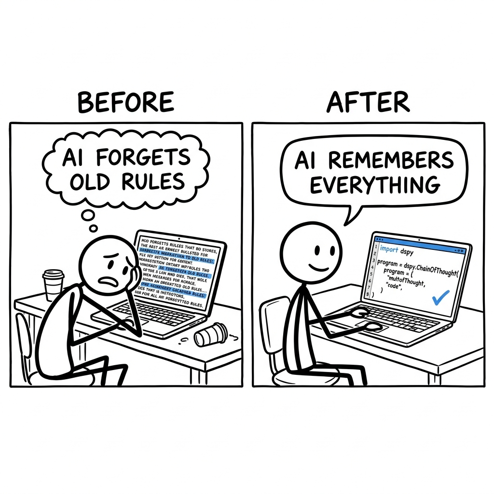

A student, trying to make their essay-writing AI assistant always cite sources properly, has a huge, messy text file of instructions. Every time they add a new rule to the text file, the AI forgets an old one, forcing them into endless rounds of manual copy-pasting and retesting.

The trade it makes versus the dominant alternative.
What it gives up
- There is an initial learning curve for its declarative programming style and concepts like 'Signatures' and 'Teleprompters'.
- It has a smaller ecosystem of direct integrations compared to broader frameworks like LangChain, although it leverages LiteLLM for wide LLM compatibility.
- Less out-of-the-box flexibility for highly imperative, step-by-step agentic workflows that some users might prefer without adapting to DSPy's module paradigm.
- The automatic program optimization (teleprompters) typically requires training data, which might not always be readily available for every use case.
What it gets in return
- Achieves significantly higher quality outputs due to its automated prompt and model weight optimization, leading to more reliable LLM programs.
- Offers better cost efficiency and latency by compiling LLM programs, often enabling the effective use of smaller, cheaper models.
- Promotes modularity and reusability, encapsulating LLM logic in testable, composable components that are easier to maintain and scale.
- Facilitates faster iteration cycles, allowing developers to experiment and improve LLM programs rapidly without extensive manual prompt engineering.
- Provides end-to-end lifecycle management, with built-in support for finetuning and deploying models as part of the framework.
DSPy's fundamental advantage lies in its "programming, not prompting" philosophy and its core "compilation" engine for LLM programs. This counter-positions it against frameworks like LangChain, which thrive on an imperative, component-chaining paradigm. If LangChain were to adopt DSPy's automatic program optimization and declarative style, it would necessitate a complete architectural overhaul, alienating its vast user base who are accustomed to explicit control and its sprawling integration ecosystem. Such a shift would also invalidate its existing documentation, tutorials, and community knowledge, effectively destroying its current market position and brand identity as a versatile "glue code" for LLM systems.
Four dimensions that actually split the field.
- App Building Style: This describes the primary way you structure and write your LLM application code.
- Auto Improve Programs: Does the library offer automatic ways to make your LLM programs perform better over time, beyond manual tweaks?
- Detailed LLM Control: How much direct power you have over how the LLM thinks and talks, like enforcing specific output formats.
- Model Finetuning Built-in: Can you train and improve the LLM itself directly from within the library, not just use external ones?
| Product | App Building Style | Auto Improve Programs | Detailed LLM Control | Model Finetuning Built-in |
|---|---|---|---|---|
| DSPy | Declarative PythonYou write Python code that directly programs LLMs like functions, focusing on modularity and explicit data flow through 'Signatures'. | FullIt automatically optimizes prompts and model weights using 'teleprompters' and training data to improve reliability and quality. | FullEnforces strict structured inputs/outputs with 'Signatures' and offers fine-grained control via adapters, types (e.g., Reasoning, Tools), and explicit control over generation parameters. | FullIntegrates directly with OpenAI, Databricks, and local SFT for finetuning models and deployment through its provider system. |
| LangChain | Chains & AgentsYou connect various components (LLMs, tools, retrievers) into imperative workflows using 'chains' or 'agents' with an extensive ecosystem. | LimitedOffers prompt templating and some evaluation tools, but no built-in 'compiler' for automatic, programmatic optimization of LLM behavior. | SomeProvides structured output parsers and Pydantic-based output, but less emphasis on a unified 'programming' model for LLMs compared to DSPy's Signatures. | NoneFocuses on integrating with existing LLMs and services; finetuning is typically done via external provider APIs or other tools. |
| LlamaIndex | Data PipelinesPrimarily focuses on ingesting, indexing, and querying data to build Retrieval-Augmented Generation (RAG) applications and data agents. | NoneIt's a data framework for RAG; it doesn't automatically optimize the LLM's internal reasoning steps, prompts, or weights. | SomeOffers control over retrieval and synthesis prompts, but its core is data management, not granular LLM behavior programming or structured I/O enforcement. | NoneLike LangChain, it uses models but doesn't provide direct finetuning capabilities for models within the framework. |
| Raw LiteLLM / OpenAI API | Direct API CallsYou directly interact with LLM APIs, writing all logic, prompting, and parsing yourself with minimal abstraction. | NoneRequires manual effort for all prompt engineering, evaluation, and iteration; no built-in system for automatic program improvement. | FullYou have direct control over all API parameters and response details, but all structured I/O and complex logic must be hand-coded. | Direct APIFinetuning is done by calling the provider's specific finetuning APIs (e.g., OpenAI's fine-tuning API) independently. |
Features hiding in the codebase that the README doesn't advertise. Each one is a bet about where the product is going.
- 1Secure Disk Cache for LLM Responsesdspy/clients/cache.py, dspy/clients/disk_serialization.pyDSPy is making a significant investment in security and performance for caching LLM interactions, indicating a focus on production-grade reliability and protection against deserialization vulnerabilities from untrusted cache data. This specialized caching is a bet on DSPy being used in critical production workloads where LLM output fidelity and security matter.
- 2Deep LiteLLM Integration for Multi-Provider LLMsdspy/clients/_litellm.py, dspy/clients/lm.pyDSPy is fully committed to LiteLLM as its primary abstraction for diverse LLM providers. This deep integration ensures broad compatibility, ease of model swapping, and robust error handling for different APIs, rather than building custom integrations for each, indicating a bet on flexibility and a wide range of LLM backends.
- 3One-Command Local LLM Hosting & Finetuningdspy/clients/lm_local.pyDSPy recognizes the growing importance of local LLM experimentation and private deployment. Offering a seamless, integrated workflow for running and finetuning models locally lowers the barrier for users to work with custom or privacy-sensitive models, betting on a future where local LLM ops are crucial for development and deployment.
- 4Comprehensive Multi-Modal & Structured Output Type Systemdspy/core/types.py, dspy/adapters/types/*.pyDSPy is preparing for advanced LLM capabilities beyond pure text, establishing a foundational type system for rich multi-modal inputs, explicit tool calls, detailed reasoning, and verifiable citations. This is a bet on LLMs handling diverse data types and providing structured, accountable outputs as a standard, enabling more sophisticated and verifiable agentic systems.
- 5Semantic
dspy.CodeType with Language Inferencedspy/adapters/types/code.pyDSPy views code generation and execution as a core primitive for complex agentic workflows. Investing in a specialized, language-awareCodetype improves clarity, parsing, and reliability when LLMs interact with code, indicating a bet on increasingly code-driven LLM applications and agents. - 6Python REPL for Recursive LLMs (RLM)dspy/predict/rlm.pyDSPy is pushing the frontier of agentic AI by enabling LLMs to programmatically explore and interact with environments through a sandboxed Python REPL. This module facilitates complex problem-solving that requires iterative computation and dynamic decision-making, indicating a bet on truly programmatic and interactive LLM agents.
- 7Enhanced ReAct Agent with Structured History and Finalizationdspy/predict/react_v2.pyDSPy is continually refining agentic architectures, focusing on robust, context-aware, and auditable multi-step reasoning. Incorporating full conversation history (
dspy.History) and an explicitsubmittool for clear termination and structured outputs is a bet on building more reliable and auditable agents for complex tasks.
Features every competitor ships that this codebase deliberately doesn't. Strategy is choosing what not to do.
- 1No End-User Application UINo
templates/,static/,app.pyfor web, no mobile app directories (e.g.,ios/,android/), no UI framework imports (e.g.,streamlit,gradio). The README directs todspy.aifor documentation, not a hosted application.This choice maintains a laser-focus on being a core developer framework rather than a consumer product or a standalone application. It avoids the significant overhead of building and maintaining a user interface, allowing the team to concentrate solely on the LLM programming model. Risk: It raises the barrier to entry for non-technical users who might need a ready-to-use application. - 2No Integrated Monitoring DashboardWhile
dspy.utils.logging_utilsanddspy.utils.usage_trackerexist, there's no code for persistent storage, visualization, or querying of operational metrics (e.g., Prometheus, Grafana, or a custom dashboard UI). The usage tracker reports, but doesn't store for long-term trends or visualization.DSPy opts to be a programmatic backend, assuming users will integrate its logging and usage data into their existing enterprise observability and monitoring solutions. This keeps the framework lean but means DSPy doesn't offer a 'batteries-included' solution for real-time operational insights and LLM program performance tracking, relying instead on external systems. - 3No Multi-Tenancy or User RolesThe codebase lacks any explicit models or logic for managing users, organizations, roles, or permissions. There are no authentication/authorization mechanisms or related database schema definitions found within the provided files.By not addressing multi-tenancy, DSPy significantly simplifies its core architecture, focusing on the single-developer or single-team use case for LLM programming. This design choice prevents feature bloat but means users building multi-user LLM applications will need to implement their own access control and user management on top of DSPy.
- 4No External Vector Database Integrations
dspy/predict/knn.pyimplements k-nearest neighbors usingnumpyfor in-memory vector search. There are no imports or client code for popular vector databases like Pinecone, Weaviate, Chroma, or Milvus.DSPy keeps its core light by providing basic RAG primitives and relying on users to bring their preferred vector store for scalable, production-grade retrieval. This avoids the maintenance burden of numerous third-party integrations but makes DSPy less 'batteries-included' for complex RAG architectures that require specialized vector storage. - 5No Generic Cloud Model Deployment for Inference
dspy/clients/lm_local.pysupports local model serving, anddspy/clients/databricks.pyintegrates with Databricks for finetuning and deploying models there. However, there are no generic, cross-cloud features (e.g., for AWS SageMaker, Azure ML Endpoints, Google Vertex AI) for deploying any model for inference, outside of specific finetune-then-deploy flows.DSPy focuses on consuming LLMs via API providers (through LiteLLM) or enabling local development, rather than aiming to be a comprehensive MLOps platform for cloud-agnostic model deployment. This streamlines development on the LLM programming layer but shifts the burden of managing diverse cloud inference endpoints to the user. - 6No Collaborative Development FeaturesThe codebase lacks features for real-time collaborative editing, version control within the application, shared project spaces, or change tracking for DSPy programs. The model implies single-user development or external version control.DSPy prioritizes individual developer productivity and the core programming model, avoiding the substantial complexity of building real-time collaboration, state synchronization, and versioning directly into the framework. This keeps the codebase focused but implies that teams will rely on external tools (like Git) for collaborative LLM program development.